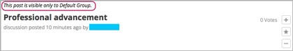

如果您想在课程中建立更小的社区，或者为不同学生群体设计不同的课程体验， 您可以在课程中 set up cohorts 。 队列功能可以在课堂内创建小型课程群体。同一队列的学生能够私下交流分享关于讨论课题的看法和经验。 队列讨论能培养学生的集体观念，为学生提供度身打造的课程体验，并鼓励学生参与更深层次的课程活动。
当您成功启用队列模式后，您需要通过定义一系列队列组来创建学生群体， 并选择学生分队策略。请见 assigning students to cohorts.
Note
为保证持续的课堂体验，课程开始后，不应变更学生的分队模式。
更多信息请看以下两节的内容：
关于“课题讨论”的更多信息请参考 管理课程讨论项目.
学生可以自动或手动加入队列，这取决于您在课程中创建的队列类型。 只有您将学生加入手动队列，队列中才会有成员。 自动队列随机加入没有分组（包括课程论坛页面或指定内容讨论主题）的学生。 如果学生进入课程内容时，您没有创建任何自动队列，系统会自动生成一个默认自动队列。 所有的学生都会被加入到队列中。
选择您在创建课程队列时的基本政策。 自动分配政策指您的课程中学生将被自动随机分配到队列中。 手动分配政策指您将创建队列并将学生手动加入到队列中。 您也可以使用混合分配方法，结合自动和手动队列。 一般情况下，您想让队列拥有的特性决定了您应该使用何种分配方式。
Note
您可以将学生手动加入到任何队列中。包括自动队列和手动队列。
Note
尽管您可以随时改变分派方法，您在创建课程时仍应该在脑中有一套分配标准。 课程开始以后，尽量仅在非常必须的情况下改变分配政策。注意在课程开始以后， 更改分配政策造成的影响。更多信息请参考 Altering Cohort Configuration in a Running Course 。 一般情况，为了向学生提供连贯的学习体验，请不要在课程开始后更改队列设置。
更多关于分配政策的信息请看下列主题。
在一些规模较大的课程中，关于某个讨论课题的帖子数量可谓堆积成山， 令人望而却步。对这类课程而言，将课程参与者分为几个小队可以有效管理发帖、 回帖以及评论数量，同时更有助于培养群体意识。
采用这种分队策略，您需要启用分队功能，并创建一组“自动”分队。 创建成功后，当一个学生第一次查看“课程讨论”页面，或其他特殊讨论课题时， 将被自动随机分配到某个小组中。所有被分到同一小组的学生组成一个队列。
这几条操作指南基于本平台对大规模在线开放课程团队的管理经验， 能够帮助您在课程中正确决定自动分队队列的数量。
比如，一项课程开始两天前，报名学生人数为80000人。 课程团队启用分队功能，创建了8个自动分队队列。 当学生访问讨论页面并查看讨论模块时，会被随机分配到一个队列中。 在分队讨论课题中，学生只能阅读、回复同一小队成员发布的内容。
更多信息请参考 启用分队功能.
在SPOC（小型私人在线课程）以及其他中小规模的课堂中， 教师可以根据学生的已知共性创建队列。比如，您的学生可能来自不同的公司， 可能拥有不同教育背景，参加了不同的团体等等。将学生按照不同共性分组， 学生能够私下讨论自己感兴趣的话题，从而寻找符合特定团体利益的资源和创意。
在使用这种分组策略之前，您需要事先了解您的学生在现实生活中属于哪一类群体。 您可以启用分队模式，并将默认设置修改为“手动”（manual）分组， 然后您可以将学生一一分配到这些手动分队队列中。 无论课程开始前后，所有加入课程的学生都必须至少被分配到一个队列中。
Note
保证每个学生都有组可分，您可以在手动分队队列之外再创建一个单独的自动分队队列。 这部分内容会在下一节中提到。如果您没时间创建队列，系统会自动创建一个默认分队以保证所有学生都有组可分。
更多信息请参考 采用手动分组策略.
对于某些课程而言，手动分队策略不太可行，自动分队策略又没法体现学生群体的共性。 还有些课程，参与人数太多，手动分队效率太低，但是又存在部分学生， 他们有非常典型的共性特征。对于这几类课程而言，您可以采用手动、自动两种分队模式混合的分队策略。
比方说，有一个校友团体集体报名了某项课程。 该团体希望能在课堂上有私下交流互动的空间，所以作为老师， 您可以对这个团体单独采用手动分队策略，而对于其他学生而言则不必如此， 只需给他们创建几个自动分队队列就可以了。
采取混合分队策略前，您首先需要了解，您的学生群体中， 哪部分学生是有强烈共性的？同时也要清楚，剩下的学生是不是也需要根据相似性分组， 还是仅仅把他们分到一组里就可以了？
启用分队模式后，您需要为每个共性群体创建一个手动分队队列， 然后根据共性将学生一一分配到相应的队列中。 同时，您需要为其他学生创建几个自动分队队列，或者也可以使用系统自动默认生成的队列。 当学生查看“讨论”页面，或在课堂上查看讨论课题时， 那些没有被分配到手动分队队列中的学生会自动分配到自动分队队列或默认队列中。 （为保证最佳效果，在采用本策略时，您最好在课程开始、学生查看讨论课题之前将手动分队队列设置完毕）
启用分队模式后，每个学生应至少分到一个队列中。为保证所有学生都有组可分。
如果您没有创建自动分队队列，系统会自动创建一个默认队列作为保底措施。 当学生访问“讨论”页面，或查看讨论课题时，手动分队队列以外的学生会自动分配到自动分队队列或默认队列中。
分配到默认队列的学生会在查看讨论帖时看见一个名为“默认小组”的队列。 如果您希望学生看到不同于默认队列的队列名称，您可以更改名称。 更多细节请参考 重新命名队列.
您可以通过课程的 student profile information report 查看究竟有多少学生被分配到了默认队列，以便您帮助他们重新分组。 但是请注意，在分队讨论课题下，学生只能看见当前小队中的内容， 也就是说，如果一个学生被重新分组，他看见的内容会暂时“消失”。 所以，为保证学生能有流畅的课堂体验，更改分组应该尽早完成。